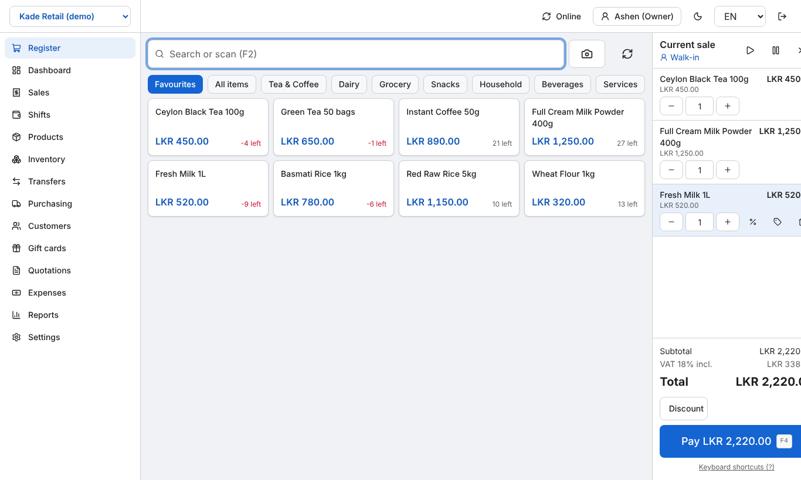
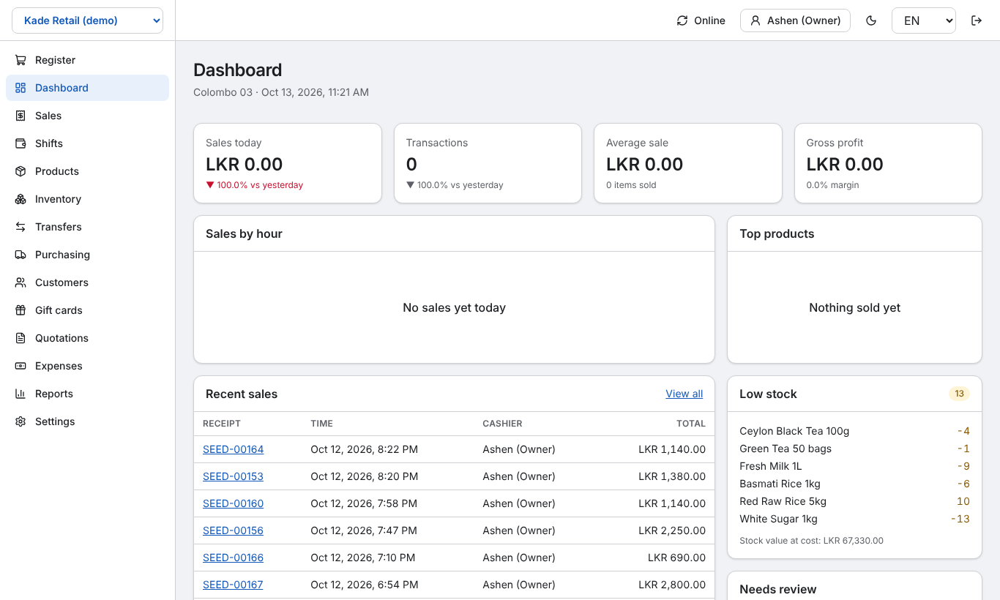
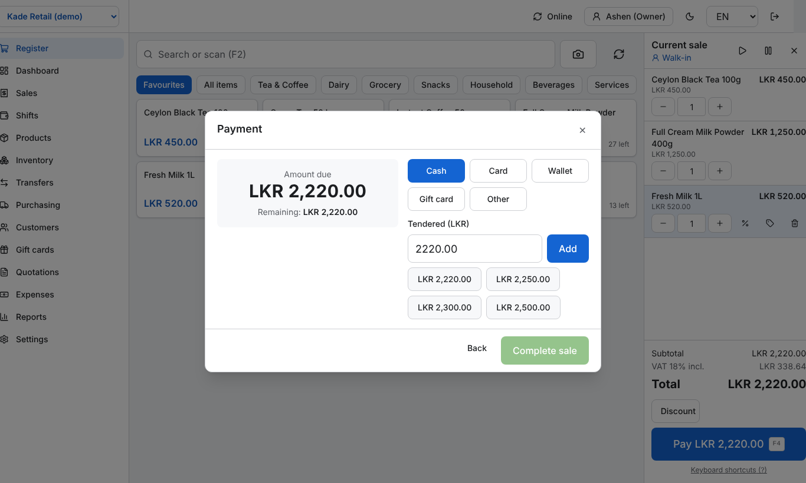
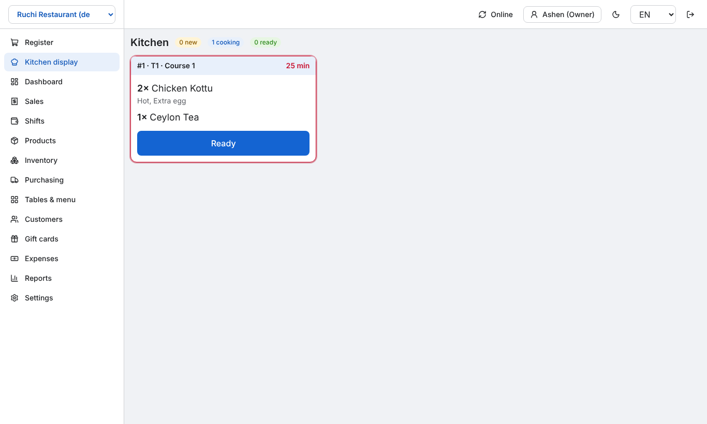
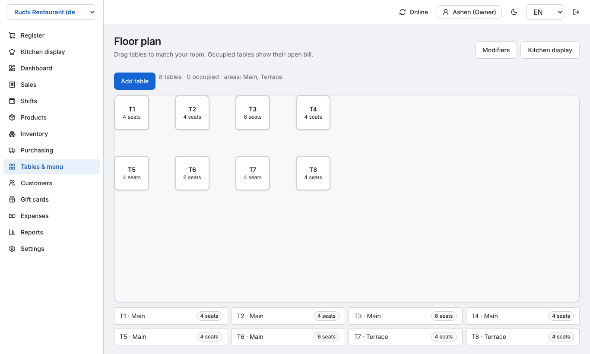
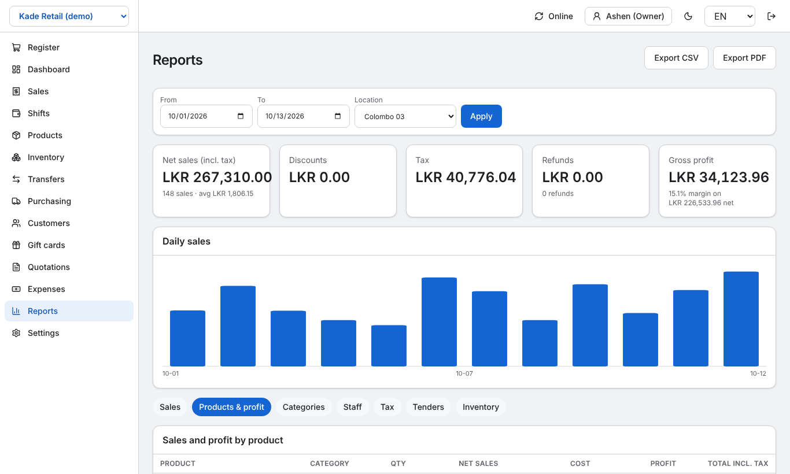
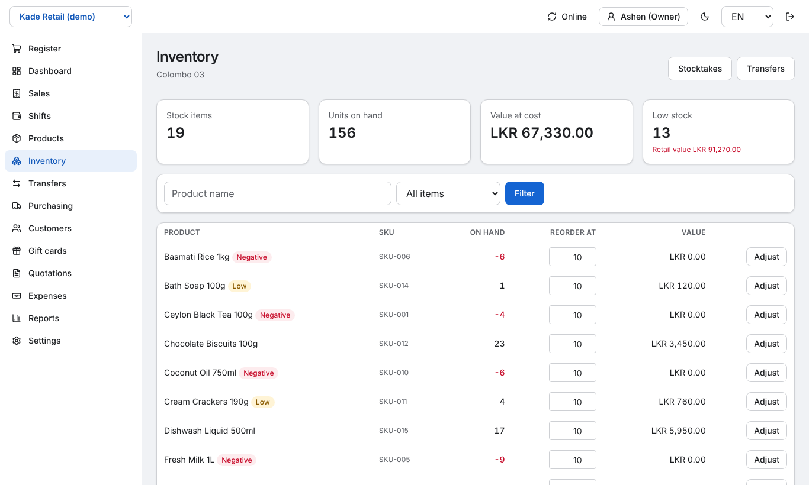
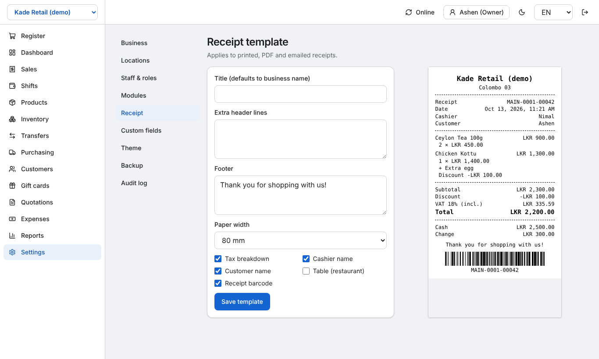
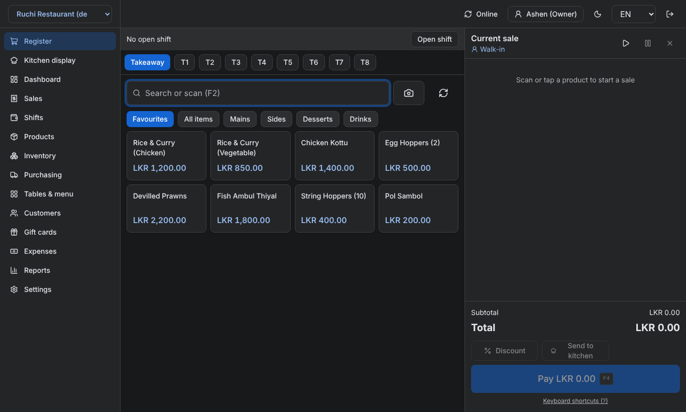

Point of sale for every shop.
Online or offline.
UniPOS is an open-source, modular POS for retail shops, groceries, restaurants and cafés — built for Sri Lanka first (LKR, VAT, සිංහල, தமிழ்) and usable anywhere.

Everything a small shop needs
A small core plus modules you switch on per business type.
Fast register
Scan with a USB scanner or camera, discounts, split tenders, hold and resume, keyboard shortcuts, 80 mm receipts.
Keeps selling offline
Installable app. Sales are saved on the device and sync once — never lost, never duplicated.
Stock you can trust
Every movement is recorded. Adjustments, stocktakes, low-stock alerts, transfers between locations, purchase orders.
Returns and cash-up
Partial refunds linked to the original sale, voids with permission, shifts with opening float and variance.
Customers and loyalty
Purchase history, points, gift cards, and personal-data export and erase.
Reports
Sales, profit, tax, staff, tenders and stock value — export to CSV or PDF.
Restaurant mode
Floor plan, table bills shared across devices, modifiers, courses and a kitchen display.
Staff and permissions
Editable roles, fast PIN switching at the till, and an audit log of refunds, voids and price changes.
Screens
Captured from the running app with demo data.








How it works
Next.js 16 · Better Auth · Prisma + PostgreSQL · Serwist + Dexie · Tailwind CSS · Vitest + Playwright
Exact money
All amounts are integer cents. A pure tax engine handles inclusive, exclusive and compound taxes the same way on the device and the server.
Safe multi-tenancy
One database, every row tagged with its shop, and Postgres row-level security as a second guard.
Offline sync
Each sale gets its final ID on the device. An outbox pushes to an idempotent endpoint, so retries can't double-charge or double-count stock.
Tested
Property-based tests on money, tax and stock; an 8-hour, 500-sale offline sync test; and 10 end-to-end flows with accessibility checks.
Get started
UniPOS needs a Node.js server and PostgreSQL, so this page only describes it — the app itself runs on Docker, Vercel, Railway or Render.
Self-host with Docker
git clone https://github.com/Dev-Ceylon/UniPOS.git && cd UniPOS
cp .env.example .env # set BETTER_AUTH_SECRET
docker compose up -d # open http://localhost:3000Develop locally
pnpm install
pnpm db:migrate
pnpm --filter @unipos/web seed # demo shops
pnpm dev| Guide | For |
|---|---|
| User guide | Cashiers and owners |
| Admin & customization | Setting up products, taxes, staff, modules |
| Hardware | Scanners, receipt printers, tablets |
| Deployment | Docker, Vercel + Neon/Supabase, Railway/Render |
| Architecture decisions | Contributors |